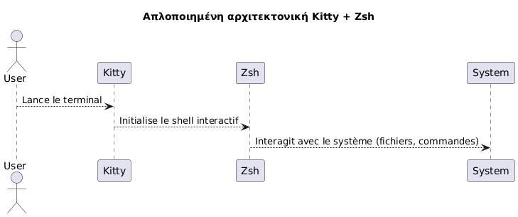
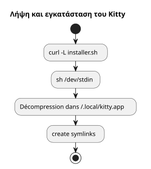
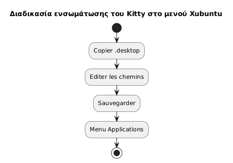
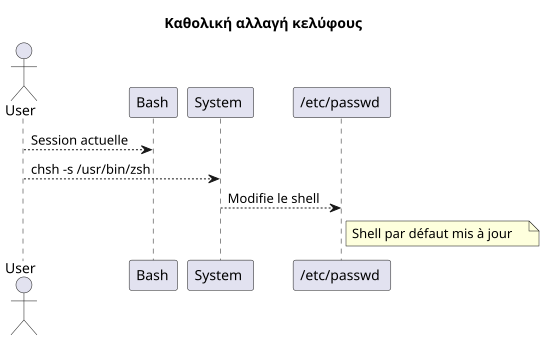
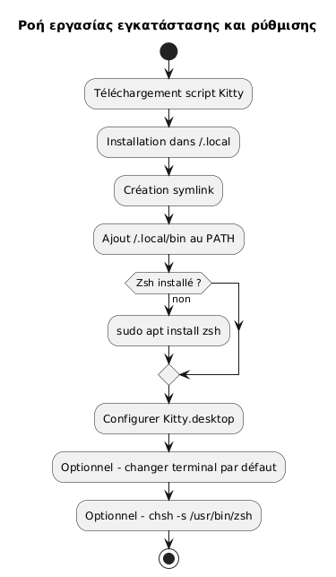
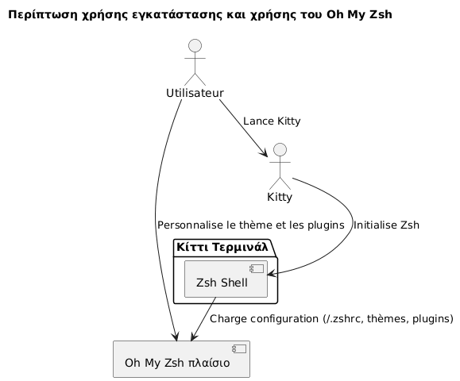
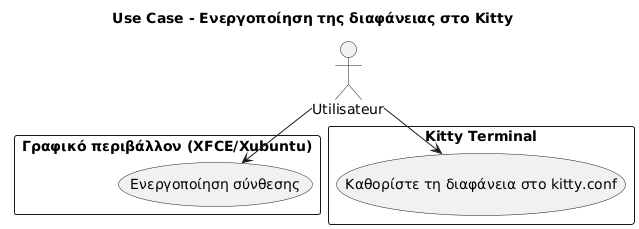
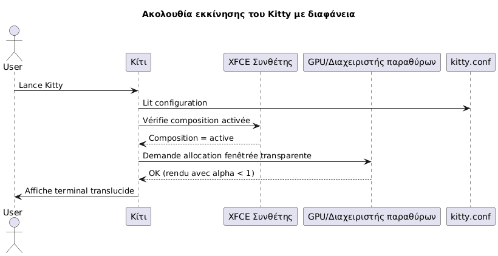

Εγκαταστήστε το τερματικό Kitty και ρυθμίστε το Zsh ως προεπιλεγμένο shell στο Xubuntu
Publié le 07 May 2026 Mis à jour le 2026-05-07
- Γιατί να επιλέξετε το Kitty και το Zsh;
- Προϋποθέσεις συστήματος
- Λήψη και εγκατάσταση του Kitty
- Ενσωμάτωση του Kitty στο Xubuntu
- Εγκατάσταση του Zsh
- Καθορίστε το Zsh ως προεπιλεγμένο shell
- �Ρύθμιση Zsh (προαιρετικό)
- Περίληψη της πλήρους ροής εργασίας
- Τελικός έλεγχος
- Εγκατάσταση και ρύθμιση του Oh My Zsh
- Ενεργοποίηση της διαφάνειας στο Kitty
- Απενεργοποίηση του ακουστικού bip (ακουστικό σήμα)
- Ενημέρωση της Kitty
- Αναφορές
- Συμπέρασμα
Αυτός ο οδηγός εξηγεί βήμα προς βήμα πώς να εγκαταστήσετε το τερματικό kitty στο Xubuntu, να το ρυθμίσετε σωστά, και να αντικαταστήσετε το bash με το zsh ως προεπιλεγμένο shell. Το έργο kitty είναι διαθέσιμο εδώ: https://github.com/kovidgoyal/kitty
_ Το Kitty είναι ένας σύγχρονος, γρήγορος και ρυθμιζόμενος τερματικός, ειδικά κατάλληλος για απαιτητικούς προγραμματιστές. _
Γιατί να επιλέξετε το Kitty και το Zsh;
Η Kitty διακρίνεται με:
-
Βελτιστημένη απόδοση χάρη στην επιτάχυνση GPU,
-
Μια ρύθμιση που βασίζεται πλήρως σε ένα μοναδικό αρχείο κειμένου,
-
Εξαιρετική υποστήριξη γραμματοσειρών και συνδετέσμων.
Το Zsh, από την πλευρά του, είναι ένα δυνατός διαλογικός κέλυφος που προσφέρει:
-
Μια έξυπνη συμπλήρωση,
-
Ένας προσαρμόσιμος prompt,
-
Μεγάλη συμβατότητα με το bash.
Συνδυάζοντας το Kitty και το Zsh, απολαμβάνεσθε ένα παραγωγικό και αισθητικό περιβάλλον.

|
Αυτός ο οδηγός είναι προσημαστικά περιορισμένος στην εγκατάσταση μέσω script και στο Xubuntu. |
Προϋποθέσεις συστήματος
Πριν ξεκινήσετε, βεβαιωθείτε ότι έχετε :
-
Xubuntu εγκατεστημένο
-
μία πρόσβαση στο διαδίκτυο,
-
Ένας λειτουργικός bash shell για να εκτελέσετε το script.
Ελέγξτε το περιβάλλον σας :
uname -a
lsb_release -aΛήψη και εγκατάσταση του Kitty
Η Kitty συνιστά να την εγκαταστήσετε μέσω ενός επίσημου σεναρίου που τοποθετεί τα αρχεία στο`~/.local/kitty.app`.
|
Αυτή η μέθοδος είναι ανεξάρτητη από τους διαχειριστές πακέτων (χωρίς`apt`). |
Κατεβάστε το script της εγκατάστασης
Εκτελέστε την ακόλουθη εντολή :
curl -L https://sw.kovidgoyal.net/kitty/installer.sh | sh /dev/stdinΑυτή η εντολή εκτελεί :
-
λήψη των δυαδικών,
-
εξαγωγή στο`~/.local/kitty.app`,
-
Δημιουργία συμβολικών συνδέσμων.

Δημιουργία συμβολικών συνδέσμων
Για να μπορέσετε να καλέσετε`kitty`Από το τερματικό, δημιουργήστε ένα συμβολικό σύνδεσμο:
ln -s ~/.local/kitty.app/bin/kitty ~/.local/bin/kittyΠροσθέστε`~/.local/bin`στο PATH σας αν δεν το έχετε κάνει ήδη:
echo 'export PATH="$HOME/.local/bin:$PATH"' >> ~/.zshrc
source ~/.zshrcΜπορείτε να ελέγξετε την εγκατάσταση:
kitty --versionΕνσωμάτωση του Kitty στο Xubuntu
Για να εμφανιστεί το Kitty στο μενού εφαρμογών :
Αντιγράψτε το αρχείο desktop
Αντιγράψτε το αρχείο`.desktop`παρέχετε :
cp ~/.local/kitty.app/share/applications/kitty.desktop ~/.local/share/applications/Τροποποίησε το αρχείο desktop
Επεξεργαστείτε το αρχείο :
nano ~/.local/share/applications/kitty.desktopΈλεγξτε ή τροποποιήστε τις παρακάτω γραμμές:
[Desktop Entry]
Version=1.0
Type=Application
Name=Kitty Terminal
Comment=Fast GPU-based terminal emulator
Exec=/home/$USER/.local/kitty.app/bin/kitty
Icon=kitty
Categories=System;TerminalEmulator;Αντικαταστήστε`YOURUSER`από το όνομα χρήστη σας

Συνδέστε το Kitty ως προεπιλεγμένο τερματικό (προαιρετικό)
Για να είναι το τερματικό Kitty εκτελούμενο ως προεπιλογή:
sudo update-alternatives --install /usr/bin/x-terminal-emulator x-terminal-emulator ~/.local/kitty.app/bin/kitty 50
sudo update-alternatives --config x-terminal-emulatorΕπιλέξτε`kitty`στο προτεινόμενο μενού.
Εγκατάσταση του Zsh
Αν το Zsh δεν είναι ακόμα εγκατεστημένο, εκτελέστε :
sudo apt install zshΕλέγξτε την εγκατάσταση :
zsh --versionΚαθορίστε το Zsh ως προεπιλεγμένο shell
Μπορείτε να αλλάξετε το κέλυφος σας συστημικά ή μόνο στο Kitty.
Συνολική μέθοδος (για όλους τους τερματίς)
Βρείτε τη απόλυτη διαδρομή:
which zshΣυνήθως`/usr/bin/zsh`.
Αλλάξτε το προεπιλεγμένο shell:
chsh -s /usr/bin/zshΑποσυνδεθείτε και συνδεθείτε ξανά.

Μέθοδος ειδική για το Kitty
Αν προτιμάτε να αλλάξετε μόνο το shell στο Kitty, επεξεργαστείτε το αρχείο ρύθμισης:
nano ~/.config/kitty/kitty.confΠροσθέστε αυτή τη γραμμή :
shell zshΑποθηκεύστε και επανεκκινήστε το Kitty.
�Ρύθμιση Zsh (προαιρετικό)
Για να προσαρμόσετε το Zsh σας:
Δημιούργησε ένα αρχείο .zshrc
touch ~/.zshrc
nano ~/.zshrcΠαράδειγμα ελαχιστής διαμόρφωσης
export ZSH_THEME="robbyrussell"
export PATH="$HOME/.local/bin:$PATH"
alias ll="ls -la"Περίληψη της πλήρους ροής εργασίας
Το σχήμα που ακολουθεί παρακάτω συνοπτίζει ολόκληρο τη διαδικασία :

Τελικός έλεγχος
Εκκινήστε τη Kitty :
kittyΘα πρέπει να δείτε ότι`zsh`είναι ενεργός :
echo $SHELLΑναμενόμενο αποτέλεσμα :
/usr/bin/zsh
Για να αλλάξετε το μέγεθος της γραμματοσειράς στοΚίτυ, πρέπει να ρυθμίσουμε την παράμετρο`font_size`στο αρχείο ρυθμίσεων. Εδώ είναι η λεπτομερής διαδικασία:
�📂 Άνοιγμα του αρχείου ρυθμίσεων
Το κύριο αρχείο ρυθμίσεων συνήθως βρίσκεται στον :
~/.config/kitty/kitty.confΑν αυτό το αρχείο δεν υπάρχει ακόμα, μπορείτε να το δημιουργήσετε. Παράδειγμα :
nano ~/.config/kitty/kitty.conf�🖋️ Προσθέστε ή τροποποιήστε `font_size
Προσθέστε την ακόλουθη οδηγία, ή τροποποιήστε τη αν υπάρχει ήδη:
font_size 14.0εδώ`14.0`Ταιριάζει με την επιθυμητή μέγεθος. Μπορείτε να ορίσετε οποιαδήποτε δεκαδική τιμή, για παράδειγμα.12.0, 15.5, κ.λπ.
💾 Αποθήκευση και επανεκκίνηση του Kitty
-
Αποθηκεύστε (
Ctrl + O, και έπειτα`Entrée`) και αφήνετε (Ctrl + X) αν χρησιμοποιείτε`nano`. -
Κλείște όλα τα παράθυρα του Kitty, στη συνέχεια επανεκκινήστε το τερματικό ώστε η αλλαγή να λάβει εφαρμογή.
✅ Δυναμική ρύθμιση (Προσωρινός Zoom)
Εάν θέλετε να κάνετε προσωρινά μεγέθυνση/σμίκρυνση χωρίς να αλλάξετε τη ρύθμιση, χρησιμοποιήστε τις προεπιλεγμένες πληκτρολογιακές συντομεύσεις:
-
Αύξηση μεγέττους γραμματοσειράς:
Ctrl + Shift + =
-
Μειώστε το μέγεθος της γραμματοσειράς:
Ctrl + Shift + -
-
Επαναφορά του μεγέθους:
Ctrl + Shift + Backspace
Οι ρυθμίσεις δεν διαμένουν μετά το κλείσιμο του τερματικού.
Εγκατάσταση και ρύθμιση του Oh My Zsh
Μόλις το Zsh έχει εγκατασταθεί και ρυθμιστεί ως προεπιλεγμένο shell, μπορείτε να πλουτίσετε το περιβάλλον σας με Oh My Zsh, ένα πλαίσιο διαχείρισης της διαμόρφωσης του Zsh, που προσφέρει:
-
Μια συλλογή θεμάτων για το prompt,
-
πολλά plugins
-
Μια σαφής οργάνωση της διαμόρφωσης.
Εγκατάσταση του Oh My Zsh
Βεβαιωθείτε ότι το Zsh είναι ενεργό:
zsh --versionΑν χρειάζεται, εκκινήστε:
zshΣτη συνέχεια, κατεβάστε και εκτελέστε το επίσημο script εγκατάστασης:
sh -c "$(curl -fsSL https://raw.githubusercontent.com/ohmyzsh/ohmyzsh/master/tools/install.sh)"Αυτό το script:
-
Δημιούργησε τον φάκελο`~/.oh-my-zsh`,
-
Αποθηκεύετε προαιρετικά το αρχείο σας`~/.zshrc`,
-
ενεργοποιεί αυτόματα το νέο προτροπικό.
Αλλαγή θέματος
Ανοίξτε το αρχείο ρυθμίσεων σας:
nano ~/.zshrcΤροποποιήστε τη μεταβλητή`ZSH_THEME`για να επιλέξετε ένα άλλο θέμα (για παράδειγμα`agnoster`) :
ZSH_THEME="agnoster
Αποθηκεύστε και επαναφορτώστε τη διαμόρφωση:
source ~/.zshrcέλεγχος
Ξεκινήστε την Kitty και επαλθεύστε ότι η προτροπή έχει αλλάξει σωστά. Μπορείτε να επιβεβαιώσετε ότι το Oh My Zsh είναι ενεργό εκτελώντας :
echo $ZSHΤο αποτέλεσμα πρέπει να είναι παρόμοιο με :
/home/σου_χρήστη/.oh-my-zsh
Διάγραμμα use case

Ενεργοποίηση της διαφάνειας στο Kitty
Μια από τις πιο αγαπημένες λειτουργίες του Kitty είναι η δυνατότητα προσθήκης διαφανείας στο φόντο του τερματικού. Αυτό επιτρέπει να βλέπετε ελαφρώς το υποκείμενο περιβάλλον (παράθυρο, επιφάνεια εργασίας κλπ.), κάτι που είναι ιδιαίτερα χρήσιμο στην πολυεργασία.
Προαπαιτούμενα για τη διαφάνεια
Η διαφάνεια στη Kitty βασίζεται στοσυντάκτης παραθύρωνΧρησιμοποιείται από το γραφικό περιβάλλον. Στο Xubuntu (βάσει του XFCE), βεβαιωθείτε ότι τηΗ σύνθεση είναι ενεργοποιημένη.
-
δεξί κλικ στο επιφάνεια εργασίας > Ρυθμίσεις >�Ρυθμίσεις διαχειριστή παραθύρων,
-
καρτέλαΣυνθέτης: το πλαίσιο "Activer la composition" πρέπει να είναι επιλεγμένο.

�Ρύθμιση της διαφάνειας στο kitty.conf
�Άνοιξτε το αρχείο ρυθμίσεων σας`~/.config/kitty/kitty.conf`:
nano ~/.config/kitty/kitty.confΠροσθέστε ή τροποποιήστε τις ακόλουθες γραμμές:
background_opacity 0.85Αυτή η παράμετρος αποδέχεται τιμές μεταξύ :
-
1.0→ αδιαφανές (καμία διαφάνεια), -
0.0→ πλήρως διαφανής (αν χρήσιμος), -
μεταβιβασμένες τιμές όπως`0.90`,
0.75, κ.λπ.
Ένα καλό οπτικό συνθηκό είναι συνήθως μεταξύ`0.85` et 0.95.
Επανεκκίνηση Kitty
Κλείστε όλα τα παράθυρα του Kitty, και στη συνέχεια ανοίξτε ένα νέο παράθυρο ώστε οι αλλαγές να ισχύσουν:
kittyΠιθανά Συμπλήρωματα
Εάν χρησιμοποιείτε ένα προσαρμοσμένο φόντο τερματικού, μπορείτε επίσης να ορίσετε ένα χρώμα φόντο με διαφάνεια (σε RGBA):
background #1e1e2effΗ τελευταία συστατική (ff) δεικνύει την αδιαφάνεια (του`00` à ff).
Διάγραμμα ακολουθίας - Αρχικοποίηση του Kitty με διαφάνεια

Γνωστές περιορισμοί
|
Η διαφάνεια δεν λειτουργεί αν: - Ο συνθέτης XFCE είναι απενεργοποιημένος, - χρησιμοποιείται μια ασυμβέβλητη διαχείριση παραθύρων, - Χρησιμοποιείτε το Kitty σε λειτουργία tmux στο παρασκήνιο χωρίς υποστήριξη διαφάνειας. |
Απενεργοποίηση του ακουστικού bip (ακουστικό σήμα)
Από προεπιλογή, Kitty εκπέμπει έναν ήχο bip όταν εισάγεται μια λανθασμένη εντολή ή όταν ένα συμβάν τερματικού το ενεργοποιεί. Dieser θόρυμπος μπορεί γρήγορα να γίνει ενοχλητικός, ειδικά σε ένα περιβάλλον εντατικής ανάπτυξης.
Για να απενεργοποιήσετε αυτή τη συμπεριφορά, προσθέστε την ακόλουθη οδηγία στο αρχείο`~/.config/kitty/kitty.conf`:
audible_bell no|
Μπορείτε επίσης να ενεργοποιήσετε μια οπτική ανατροφοδότης αντί του ήχου биπ με : |
Ενημέρωση της Kitty
Επειδή το Kitty εγκαθίσταται μέσω σεναρίου και όχι ενός διαχειριστή πακέτων, η ενημέρωση γίνεται εκτελώντας ξανά το επίσημο σενάριο εγκατάστασης. Αυτό επιτρέπει τη λήψη της τελευταίας έκδοσης και την ενημέρωση της υπάρχουσας εγκατάστασης σας στο`~/.local/kitty.app`.
|
Το επίθημα`.app`στο δρόμο`~/.local/kitty.app`Είναι η σύμβαση εγκατάστασης του Kitty στο Linux μέσω του επίσημου του script, και δεν υποδεικνύει καμία αποκλειστική συμβατότητα με το macOS. |
|
Πριν εκτελέσετε την εντολή ενημέρωσης, βεβαιωθείτε ότι βρίσκεστε στον προσωπικό σας φάκελο ( |
Εκτελέστε την ακόλουθη εντολή από τον προσωπικό σας κατάλογο :
curl -L https://sw.kovidgoyal.net/kitty/installer.sh | sh /dev/stdinΑυτό το σενάριο θα ασχοληθεί με:
-
Κατεβάστε τα δυαδικά της νέας έκδοσης.
-
Αποσυμπίεσέ τα αρχεία σε`~/.local/kitty.app`.
-
Ενημερώστε τους συμβολικούς συνδέσμους αν χρειάζεται.
Μετά την ενημέρωση, συνιστάται να κλείσετε όλες τις occurrences του Kitty και να τα επανεκκινήσετε για να βεβαιωθείτε ότι η νέα έκδοση λαμβάνεται σωστά.
Αναφορές
Εάν θέλετε να βαθύνετε την προσαρμογή, ανατρέξτε στην επίσημη τεκμηρίωση:
Συμπέρασμα
Έχετε τώρα:
-
ένα σύγχρονο και αποδοτικό τερματικό (Kitty)
-
ένας ισχυρός και προσαρμόσιμος shell (Zsh)
-
μιας καθαρής και ανεξάρτητης από τα πακέτα του συστήματος διαμόρφωσης
-
μιας αισθητικής και λειτουργικής τερματικού εξοπλισμένου με το Oh My Zsh